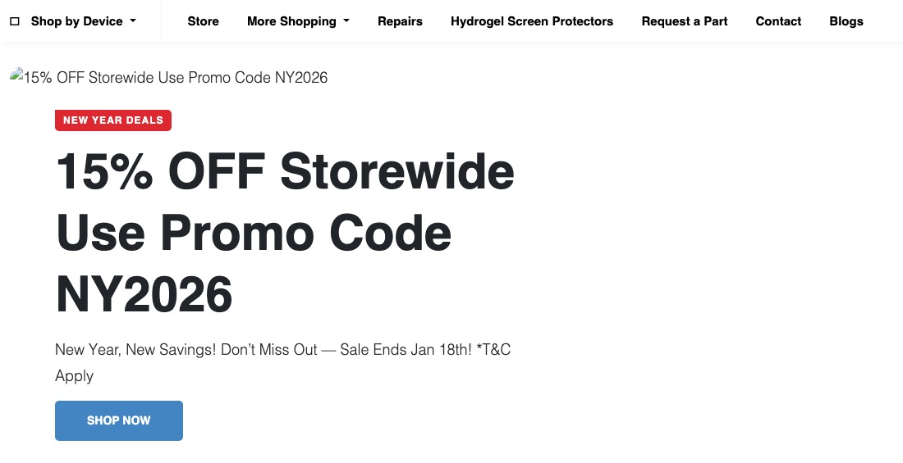
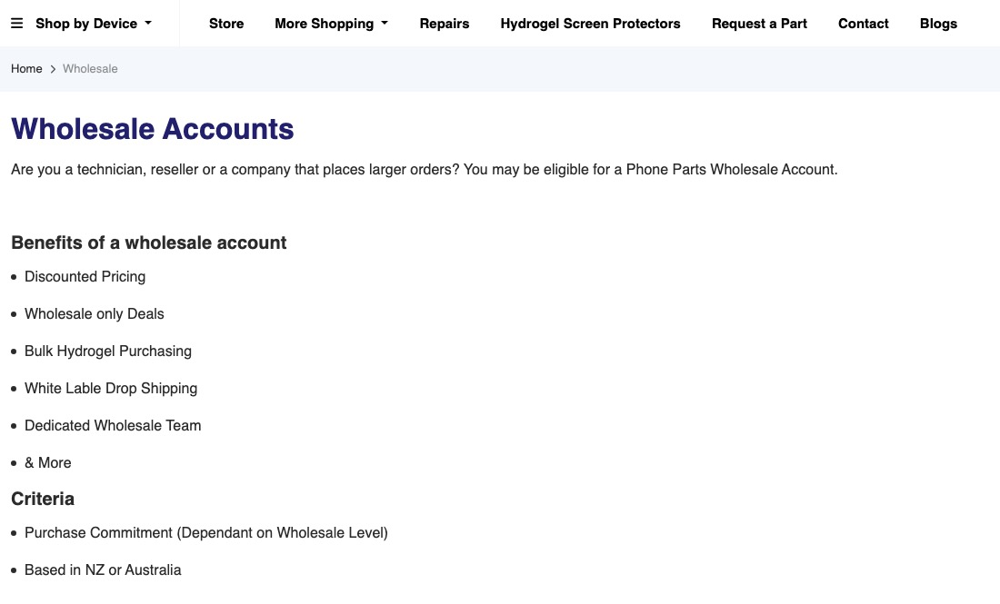

Case study · WordPress sites
Phone Parts NZ: WooCommerce store for phone parts, accessories and repairs
A New Zealand WooCommerce store for phone parts, tools and repairs, with business and wholesale entry points, a part-request form and a repair form.
At a glance
- Who it's for
- Phone and tablet owners, repair technicians, resellers and businesses in New Zealand (and, for wholesale, Australia). It sells parts, accessories and repair tools, and also takes repair jobs at a Christchurch address.
- Core stack
- WordPress 6.8.3, WooCommerce 10.4.3 and the NitroPack speed plugin, as named in the page source of the 17 January 2026 capture, plus companion plugins for search, wishlists, discounts and payments
- What sets it apart
- One store serves four audiences from one header: retail shoppers, businesses (PP Business), wholesale buyers (PP Wholesale) and repair customers. A Request a Part form covers items that are not listed.
The store, from the archive
The homepage and the wholesale page as archived on 17 January 2026 and 5 December 2025.


The challenge
A parts retailer has two problems at once. The range is huge and tied to exact device models, so shoppers must be able to find a part by brand and model. And the customers differ: a person fixing one phone, a repair shop buying in bulk, and a company that wants a supplier.
The store also sells repair work, not only products, and there will always be parts that are not listed. A single WooCommerce catalogue has to hold all of that without sending each audience through the same checkout.
What is built
The public store runs on WordPress with WooCommerce. A "Shop by Device" menu lists 19 brands, from Apple and Samsung to Nothing and One NZ, and a "More Shopping" menu lists 15 wider categories, including Repair Tools, Charging & Cables and Computer Accessories. The homepage shows category tiles with product counts. In the 17 January 2026 capture these read 5290 products for Apple and 9245 for Samsung.
Around that catalogue sit the other entry points: PP Business and PP Wholesale in a top strip, a Book Repair button, a Request a Part form, account login and signup, reward points, and links to the store's own iOS and Android apps.
Key features
Seen on archived pages dated 5 December 2025 to 17 January 2026.
- 01
Device-first navigation
A "Shop by Device" menu with 19 brands, and under Apple separate branches for iPhone, iPad, Apple Watch, MacBook and AirPods, each down to model level.
- 02
Repair tools range
A repair-tools category with sub-categories such as screwdrivers, tool kits, pry tools, spudgers, tweezers and battery testers, and a separate Hydrogel Screen Protectors menu item.
- 03
Delivery and rewards strip
The homepage says overnight NZ delivery on stocked items ordered before 2pm, free shipping on orders over $150, and reward points. As archived on 17 January 2026.
- 04
Accounts, wishlist and promo codes
Login and signup forms in the header, a wishlist and a track-order link, and a site-wide promo bar. The archive shows two: XMAS25 (15% off, to Dec 25) and NY2026 (15% off, to Jan 18).
- 05
Business and wholesale pages
PP Business is a company-facing page and PP Wholesale describes an application-based account for technicians, resellers and larger buyers.
- 06
Request a Part
A form for parts that are not in the catalogue, with fields for part, quantity, brand, model and specifications. The page says the team will send a link if the item exists, or try to source it.
- 07
Repair service and quote form
A repairs page lists smartphone, PC and Mac, laptop and MacBook, iPad and tablet repair and data recovery, with a form that asks for device, brand, model and the fault.
- 08
Own mobile apps and blog
The homepage links to the store's Google Play and App Store listings and mentions app-only deals. A blog carries posts dated from September to December 2025, and the promo bar moved from XMAS25 (December 2025) to NY2026 (January 2026).
Business, wholesale and requests
What each non-retail entry point showed in its capture.
PP Business (archived 17 January 2026)
The hero says "Your trusted technology partner" and offers Explore More and Contact Us buttons. The about text says the company was founded in 2012 in Christchurch by Jamie Breeze, who began by repairing phones for friends and family, and that it now supplies repair stores in New Zealand and Australia. Four service blocks follow: Procurement, tech repair, technical support (remote, or on site in Christchurch and nearby) and Reliable Partner.
PP Wholesale (archived 5 December 2025)
The page is for technicians, resellers and companies that place larger orders. It lists discounted pricing, wholesale-only deals, bulk hydrogel purchasing, white-label drop shipping and a dedicated wholesale team. The criteria are a purchase commitment that depends on the wholesale level, and being based in New Zealand or Australia. Applications are reviewed: the page says the team will be in touch if one is accepted.
Request a Part (archived 17 January 2026)
The form collects name, phone, email, the part wanted, quantity, brand, model, further model information, specifications and details. The page explains what happens next: staff check the database and reply with a link, or pass the request to a product manager, add the part if it can be sourced and notify the customer.
Repairs and Book Repair (archived 13 January 2026)
The repairs page describes a four-step process: request a quote, ship the package, receive updates, collect the repaired device. Its repair form asks for company name, name, email, phone, address, device type, brand and model, a fault description and whether the fault is intermittent. The header's Book Repair button points to
/repair/.
How the store fits together
The public structure as it appears from the menus, footer and page source.
- Catalogue19 brands, 15 wider categories
- WooCommerce checkoutcart, promo codes, wishlist
- Accounts and rewardslogin, signup, track order, points
- Business and wholesalecompany page, applied-for accounts
- Requests, repairs, appspart form, repair form, iOS and Android
- The same header, footer and device menu appear on the homepage, business, wholesale, request-a-part and repairs captures, so every entry point shares one site shell.
- The footer lists opening hours (Monday to Friday 09:30 to 17:30, Saturday 10:00 to 17:00, Sunday closed), a Christchurch address at 3/574 Colombo Street, a store and collection page, delivery, returns and payment information pages, and a note that downloading the apps gives an extra 15% off a first order.
- In January 2016 the store ran on Neto, a hosted ecommerce platform: the archived page loaded its theme and scripts from
cdn.neto.com.au.
Technology stack
Taken from the page source of the 17 January 2026 capture and the store links.
- Platform
- WordPress 6.8.3
- WooCommerce 10.4.3
- NitroPack
- Shop plugins
- Ajax Search for WooCommerce
- YITH Wishlist
- YITH Badge Management
- Back in Stock Notifier
- Woo Discount Rules
- Smart Coupons
- Boost Sales
- Payments and marketing
- Zip payments plugin
- Google Listings & Ads
- Google Tag Manager
- Contact Form 7
- Apps and delivery
- Google Play app
- App Store app
Business value
What the setup enables.
- Lets a shopper find a part by device and model, then check out, without calling the shop.
- Gives repair shops and companies their own pages and a wholesale application, so trade buyers do not use the retail path.
- Captures demand for parts that are not listed, through the Request a Part form, and turns it into catalogue additions.
- Brings retail, trade and repair work into one site, one account system and one set of delivery and returns pages.
Need a WooCommerce store like this?
Tell us what the store needs to do and we will scope it with you on a call.